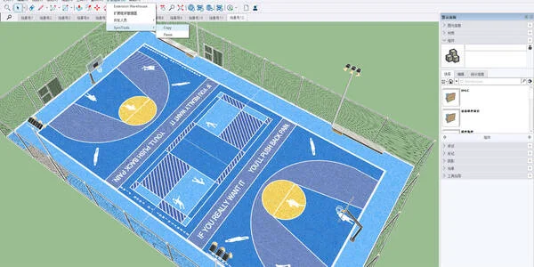
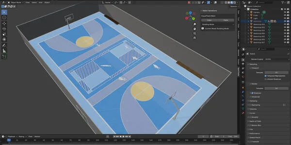
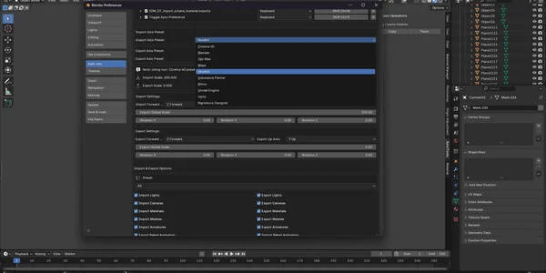
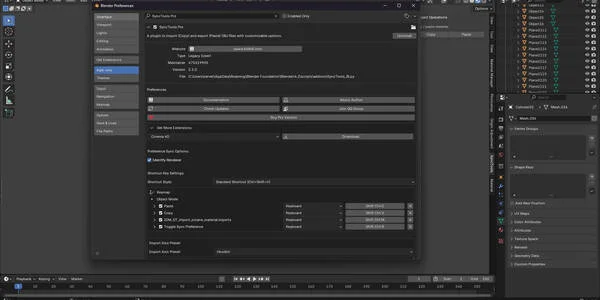
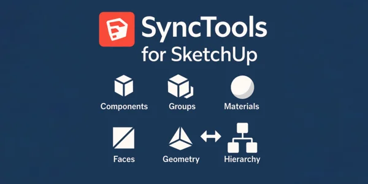
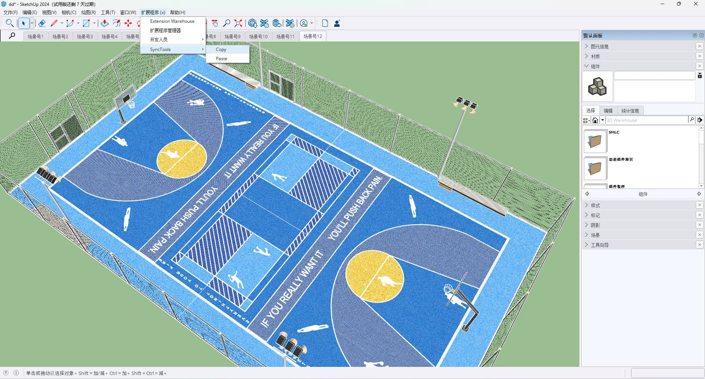
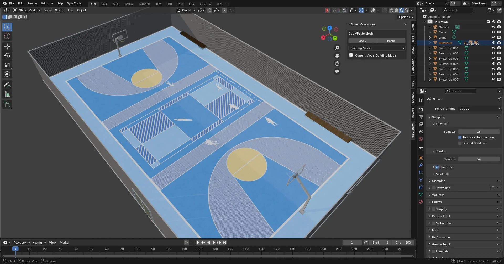

SyncTools for SketchUp
$12.00相册






产品信息
描述
SyncTools for SketchUp
🌍 多 DCC 平台支持
SyncTools 系列扩展支持主要的 数字内容创作软件, 包括:
✅ SyncTools for Maya (已发布)
✅ SyncTools for 3ds Max (已发布)
✅ SyncTools for Houdini (已发布)
✅ SyncTools for Cinema 4D (已发布)
✅ SyncTools for Rhino (已发布)
✅ SyncTools for Marvelous Designer (已发布)
✅SyncTools for 虚幻引擎 (已发布)
✅ SyncTools for Substance Painter (已发布)
🛠 SyncTools for Unity (开发中)
✅ SyncTools for Zbrush (已发布)
✅ SyncTools for SketchUp (已发布)
所有插件使用 统一的数据交换协议, 实现 跨平台无损资产转换 和 真正的多软件协同工作流.
兼容性
推荐版本: SketchUp 2022 或更新版本
支持的版本: SketchUp 2014–2021
操作系统: Windows, macOS


功能概述
SyncTools supports bidirectional import 和 export of the following 3D assets:
组件
分组
面
材质
几何
层级结构
插件安装
找到 SketchUp 插件目录
根据您的操作系统，插件路径为：
Windows:
C:\Users\[Username]\AppData\Roaming\SketchUp\SketchUp 2022\SketchUp\PluginsmacOS:
~/Library/Application Support/SketchUp 2022/SketchUp/Plugins
排查插件加载问题
Check that the plugin’s folder structure is correct
Ensure the plugin files 和 directory have appropriate permissions
验证您的 SketchUp 版本是否与插件兼容
使用方法
复制: 将选中的对象导出到缓存
粘贴: 将最近导出的对象导入当前场景
注意事项
将在您的用户文档目录中创建一个
cache文件夹来存储临时数据确保有足够的磁盘空间用于缓存文件
每次粘贴操作后缓存文件会自动清理
常见问题及解决方案
1. 工具栏未显示
检查插件是否正确安装
重启 SketchUp
确保在扩展管理器中启用了该插件
2. 复制操作失败
确保已选择对象
检查可用磁盘空间
查看显示的任何错误消息
3. 粘贴操作失败
确保之前已执行复制操作
检查临时文件夹中是否存在缓存文件
查看 Ruby 控制台获取详细的错误日志
数据兼容性
| 数据类型 | 支持 | 注意事项 |
|---|---|---|
| 基本几何 | ✔️ | 面 和 edges are fully preserved |
| 组件实例 | ✔️ | — |
| 分组结构 | ✔️ | — |
| 层级结构 | ✔️ | — |
| 基本材料属性 | ✔️ | 包括颜色、透明度等 |
| 变换信息 | ✔️ | 位置, rotation, 和 scale retained |
| 材料纹理 | ⚠️ | 检查纹理路径有效性 |
| UV 坐标 | ⚠️ | 某些情况下可能需要调整 |
| 自定义属性 | ⚠️ | 可能需要手动迁移 |
| 图层信息 | ⚠️ | 部分支持 |
| 动画数据 | ❌ | 不支持 |
| 插件特定功能 | ❌ | 不支持 |
| Dynamic 组件 | ❌ | 不支持 |
| 场景设置 | ❌ | 不支持 |
| 渲染设置 | ❌ | 不支持 |
重要说明
单位: 保留原始项目单位，不自动转换
面朝向: 保留面方向以避免渲染错误
材质: 保留材质名称 和 basic properties
命名: 支持 Unicode 字符（例如中文或特殊符号）
文件格式: 内部使用 FBX 进行数据交换以确保兼容性
摘要
SyncTools for SketchUp 提供了一种简单而强大的跨平台数据传输解决方案。 通过直观的复制和粘贴功能，让您轻松在不同 3D 应用程序之间同步模型，显著提高生产效率。
如果您在使用过程中遇到任何问题，请随时联系我们。
文档
Product 文件s
- SyncTools_SU.zip(8.9 KB)